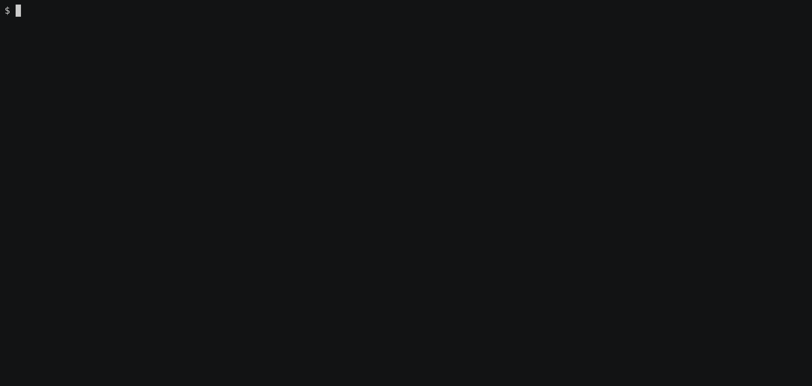

Doc strings
Doc strings provide an ability to pass a large piece of text to a step definition (and so, to a step matching function).
The text should be offset by delimiters consisting of three double-quote marks """ on lines of their own:
Feature: Animal feature
Scenario: If we feed a hungry cat it will no longer be hungry
Given a hungry cat
"""
A hungry cat called Felix is rescued from a Whiskas tin in a calamitous
mash-up of cat food brands.
"""
When I feed the cat
Then the cat is not hungry
NOTE: Indentation of the opening
"""is unimportant, although the common practice is to indent them. The indentation inside the triple quotes, however, is significant. Each line of the doc string will be dedented according to the opening""". Indentation beyond the column of the opening"""will therefore be preserved.
Doc strings also support using three backticks ``` as the delimiter, which might be familiar for those used to writing with Markdown:
Feature: Animal feature
Scenario: If we feed a hungry Leo it will no longer be hungry
Given a hungry cat
```
A hungry cat called Leo is rescued from a Whiskas tin in a calamitous
mash-up of cat food brands.
```
When I feed the cat
Then the cat is not hungry
It’s also possible to annotate the doc string with the type of content it contains, as follows:
Feature: Animal feature
Scenario: If we feed a hungry Simba it will no longer be hungry
Given a hungry cat
"""markdown
About Simba
===========
A hungry cat called Simba is rescued from a Whiskas tin in a calamitous
mash-up of cat food brands.
"""
When I feed the cat
Then the cat is not hungry
NOTE: Whilst
cucumberandgherkincrates support content types and backticks as the delimiter, many tools like text editors don’t (yet).
In a step matching function, there’s no need to find this text and match it with a pattern. Instead, it may be accessed via Step argument:
extern crate cucumber; extern crate tokio; use cucumber::{gherkin::Step, given, then, when, World}; #[derive(Debug, Default)] struct Cat { pub hungry: bool, } impl Cat { fn feed(&mut self) { self.hungry = false; } } #[derive(Debug, Default, World)] pub struct AnimalWorld { cat: Cat, } #[given(regex = r"^a (hungry|satiated) cat$")] async fn hungry_cat(world: &mut AnimalWorld, step: &Step, state: String) { // Feed only Leo and Felix. if !step .docstring .as_ref() .map_or(false, |text| text.contains("Felix") || text.contains("Leo")) { panic!("Only Felix and Leo can be fed"); } match state.as_str() { "hungry" => world.cat.hungry = true, "satiated" => world.cat.hungry = false, _ => unreachable!(), } } #[when("I feed the cat")] async fn feed_cat(world: &mut AnimalWorld) { world.cat.feed(); } #[then("the cat is not hungry")] async fn cat_is_fed(world: &mut AnimalWorld) { assert!(!world.cat.hungry); } #[tokio::main] async fn main() { AnimalWorld::cucumber() .run_and_exit("tests/features/book/writing/doc_strings.feature") .await; }
